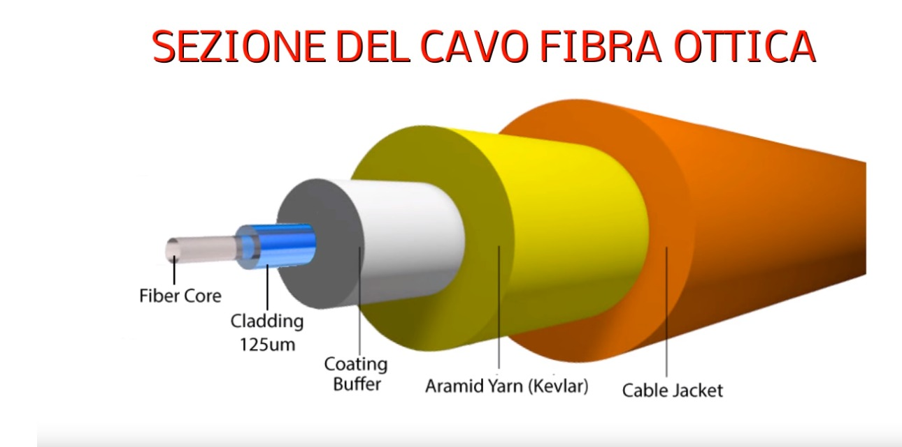

Un connettore per fibre ottiche consente il collegamento rapido (Si definisce “connettore” la terminazione di entrambi i capi di un cavo).
Ogni singola fibra ottica è composta da due strati di materiale trasparente.
I connettori fanno allineare i nuclei di fibre così facendo la luce riesce a passare . Il nucleo presenta un diametro m di circa 10 µm mentre il mantello ha un diametro di circa 125 µm
ci sono tanti tipi di connettori:
CONNETTORE SC:È un connettore affidabile, resistente ed economico
CONNETTORE FC: il suo impiego è stato ridotto con l’arrivo dei connettori SC e LC
CONNETTORE LC: sempre più impiegato nel campo delle FTTH.
CONNETTORE ST: E’ impiegato nelle fibre multi-mode
CONNETTORE FOC: no completamente realizzati in plastica e sono destinati ad applicazioni basiche.
CONNETTORE FDDI: può legarsi ai connettori SC e ST
CONNETTORE MT: È impiegato nelle applicazioni ad alta densità

Home Page